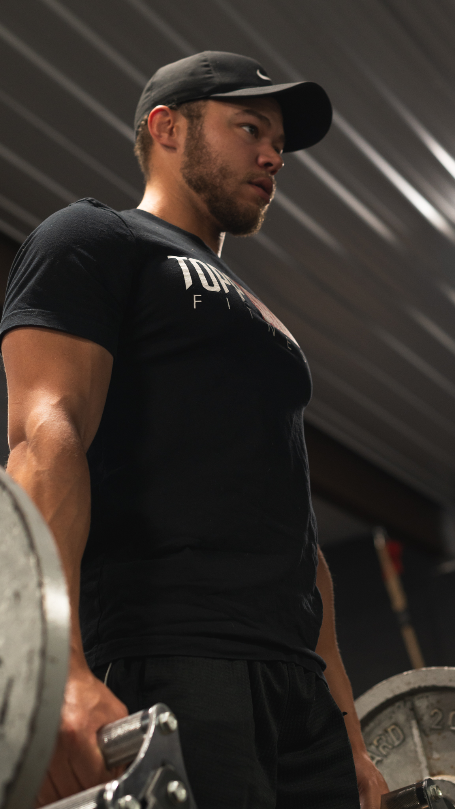
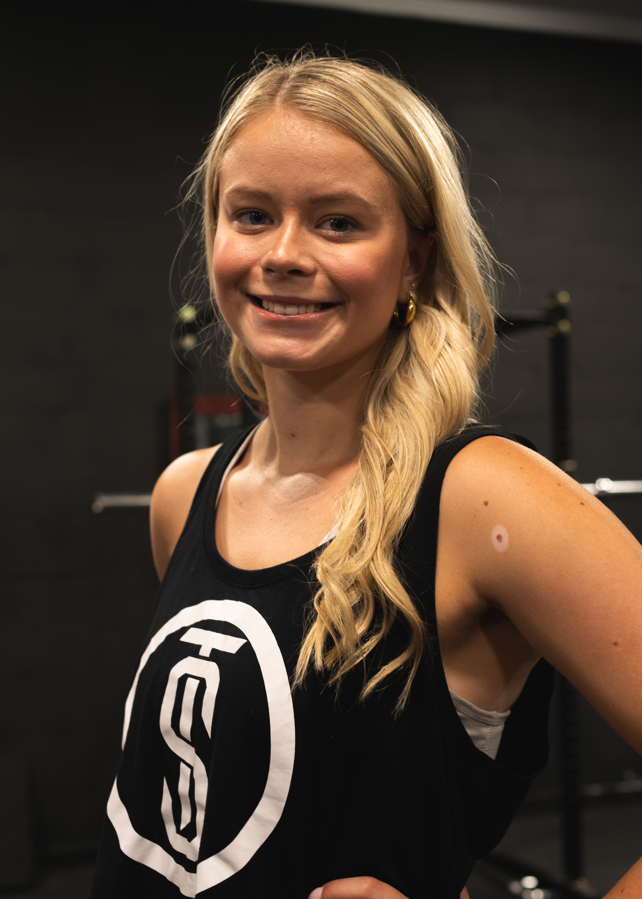

Owner · CPTTrey Topp
Trey built Topp Shape to bridge the gap between elite performance principles and real-world coaching for everyday clients.
Our team blends movement quality, progressive overload, and practical nutrition coaching to deliver results that last.

Owner · CPTTrey built Topp Shape to bridge the gap between elite performance principles and real-world coaching for everyday clients.

Women's PerformanceMorgan is known for building technically strong, encouraging sessions that help clients level up without overwhelm.